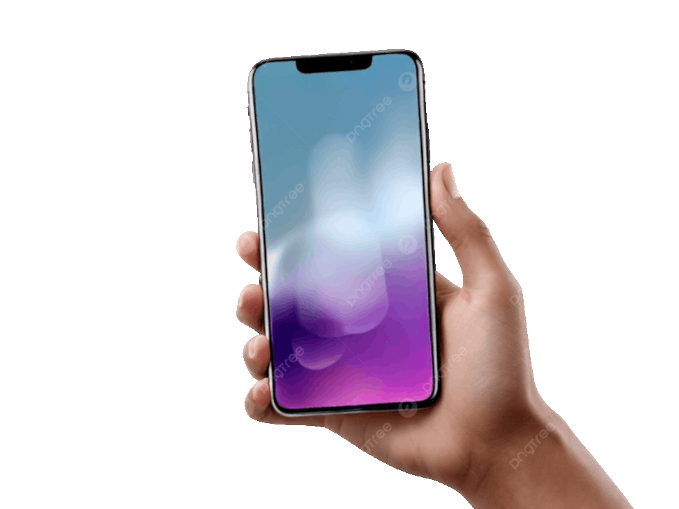

O uso do celular na escola é um tema que gera muitos debates, mas, quando utilizado de forma consciente e orientada, pode se tornar uma ferramenta importante para o aprendizado. Em vez de ser visto apenas como distração, o celular pode ampliar o acesso à informação, facilitar pesquisas rápidas e aproximar os estudantes das tecnologias que fazem parte do mundo atual.
Além disso, os celulares permitem o uso de aplicativos educativos, plataformas de ensino, calculadoras científicas, dicionários digitais e recursos multimídia que tornam as aulas mais dinâmicas e interativas. Professores também podem utilizar esses dispositivos para propor atividades colaborativas, quizzes online e projetos que estimulem a participação dos alunos
Outro ponto importante é o desenvolvimento da autonomia e da responsabilidade. Ao aprender a utilizar o celular de forma equilibrada no ambiente escolar, os estudantes desenvolvem competências digitais essenciais para o mercado de trabalho e para a vida em sociedade.
No entanto, é necessário estabelecer regras claras para evitar distrações e garantir que o aparelho seja utilizado com objetivos pedagógicos. Dessa forma, o celular deixa de ser apenas um meio de entretenimento e passa a ser um aliado da educação.
Portanto, o uso consciente do celular na escola pode contribuir para modernizar o ensino, ampliar oportunidades de aprendizagem e preparar os alunos para os desafios do mundo digital.
